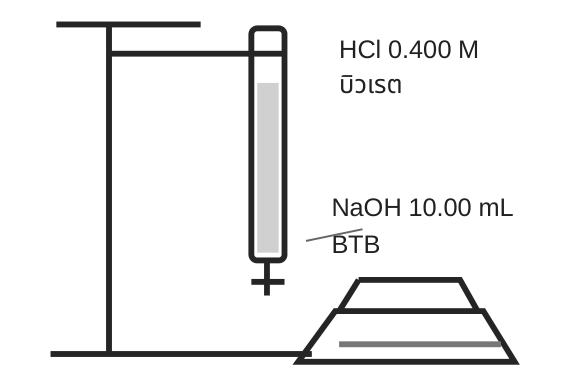
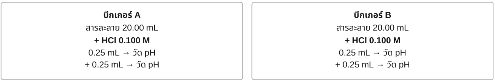

แล็บ 1 · ไทเทรต HCl–NaOH
NaOH ในขวดนี้เข้มข้นเท่าไร และจะรู้ได้อย่างไรจากค่าบิวเรต?
อุปกรณ์และสารที่ครูเตรียม
บิวเรตพร้อมขาตั้ง ปิเปต 10.00 mL พร้อมลูกยาง ขวดรูปชมพู่ 2 ใบ บีกเกอร์ เครื่องวัด pH น้ำกลั่น แว่นนิรภัย และภาชนะทิ้งสาร สารที่ใช้คือ HCl มาตรฐาน, NaOH ไม่ทราบความเข้มข้น และโบรโมไทมอลบลู (BTB)

วิธีทำ
- ตรวจฉลาก HCl ในบิวเรต แล้วบันทึกความเข้มข้นตามที่ครูแจ้ง แยก NaOH ตัวอย่างเล็กน้อยไปวัด pH ก่อนเติมกรด
- ปิเปต NaOH ใหม่ 10.00 mL ลงขวดรูปชมพู่ หยด BTB 2–3 หยด และอ่านก้นเมนิสคัสระดับสายตา
- เติม HCl พร้อมเขย่า เมื่อสีเริ่มเข้าใกล้สีเขียว ให้เติมทีละหยด หยุดเมื่อสีเขียวคงตัว แล้วบันทึกบิวเรต สี และ pH ที่จุดยุติ
- ใช้ NaOH ชุดใหม่ 10.00 mL ทำซ้ำอีกหนึ่งรอบ
สวมแว่นนิรภัย ใช้ลูกยางดูดปิเปต และทิ้งสารตามที่ครูกำหนด
บันทึกผลของกลุ่ม
HCl ตามฉลาก (mol/L)pH ของ NaOH ก่อนเติมกรด
| รายการ | รอบ 1 | รอบ 2 |
|---|---|---|
| ค่าบิวเรตเริ่มต้น (mL) | ||
| ค่าบิวเรตสุดท้าย (mL) | ||
| ปริมาตร HCl ที่ใช้ (mL) | ||
| สี BTB ที่จุดยุติ | ||
| pH ที่จุดยุติ |
ถ้าสเกลบิวเรตแบ่งช่องละ 0.1 mL ให้บันทึกสองตำแหน่งทศนิยม หากปริมาตร HCl ที่ใช้สองรอบต่างกันเกิน 0.20 mL ให้ปรึกษาครูแล้วทดลองเพิ่ม
แล็บ 1 · คำนวณความเข้มข้น
- หาปริมาตรเฉลี่ย ใช้สองรอบที่ครูยืนยัน ลบค่าสุดท้ายด้วยค่าเริ่มต้นของแต่ละรอบ แล้วหาค่าเฉลี่ย\(\overline{V}=(V_1+V_2)/2\) หน่วย mL โดยแต่ละ V คือปริมาตร HCl ที่ใช้
- แปลง mL เป็น mmol ใช้ความเข้มข้น HCl จากฉลาก โดย 1 mol/L = 1 mmol/mLปริมาตรเฉลี่ย × ความเข้มข้น
mL× mmol/mL= mmol HCl - ใช้ ICF เทียบโมล ให้ n คือ mmol ของ HCl ที่ใช้ ประมาณจุดยุติเป็นจุดสมมูล
\(\mathrm{HCl+NaOH\rightarrow NaCl+H_2O}\)
ICF · mmol HCl NaOH NaCl I · เริ่มต้น \(n\) \(n\) 0 C · เปลี่ยนแปลง \(-n\) \(-n\) \(+n\) F · หลังสะเทิน 0 0 \(n\) ICF · mmol HCl NaOH NaCl I C F - คำถามสุดท้าย · NaOH ของกลุ่มเข้มข้นเท่าไร (mol/L)?ใช้ mmol NaOH แถว I หารด้วยปริมาตรตัวอย่าง 10.00 mL mmol/mL = mol/L
เมื่อหยุดไทเทรต กลุ่มเห็น BTB เป็นสีอะไร?
ถ้าวัด pH ที่จุดยุติแล้วต่างจาก 7.00 จะใช้สัญญาณใดตัดสินว่าควรหยุด?
แล็บ 2 · ฟอสเฟตบัฟเฟอร์
ถ้าเติม HCl เท่ากัน บีกเกอร์ไหนจะเปลี่ยน pH น้อยกว่า?
คาดการณ์ก่อนเริ่ม
A หรือ B จะเปลี่ยน pH น้อยกว่า เพราะอะไร?
อุปกรณ์และสารที่ครูเตรียม
บีกเกอร์ 50 mL ติดฉลาก A/B แท่งคน 2 อัน ปิเปตแบ่งสเกล 1 mL พร้อมลูกยาง เครื่องวัด pH น้ำกลั่น กระดาษซับหัววัด แว่นนิรภัย และภาชนะทิ้งสาร ใช้ HCl 0.100 mol/L
| บีกเกอร์ | ส่วนประกอบเริ่มต้น · รวมใบละ 20.00 mL |
|---|---|
| A | NaCl 0.050 mol/L 15.00 mL + น้ำกลั่น 5.00 mL |
| B | NaCl 0.050 mol/L 15.00 mL + ฟอสเฟตบัฟเฟอร์ 5.00 mL |

วิธีทำ
- วัด pH เริ่มต้นของ A และ B แยกกัน รอให้ค่าคงที่ก่อนจด
- ใช้ปิเปตเติม HCl ใบละ 0.25 mL คนแล้ววัด pH
- เติม HCl อีกใบละ 0.25 mL ให้เป็น 0.50 mL สะสมต่อใบ คนแล้ววัด pH อีกครั้ง
สวมแว่นนิรภัย ใช้ลูกยางดูดปิเปต และล้างหัววัดแล้วซับเบา ๆ ระหว่างสลับบีกเกอร์
บันทึก pH ของกลุ่ม
| HCl สะสมต่อใบ | pH · A | pH · B |
|---|---|---|
| 0.00 mL | ||
| 0.25 mL | ||
| 0.50 mL |
แล็บ 2 · อ่านผลและคำนวณ
ใช้ข้อมูลที่วัดจริง
บีกเกอร์ใดเปลี่ยน pH น้อยกว่า? คำนวณ |ΔpH| ของทั้งสองใบจากค่าเริ่มต้นและค่าที่ 0.50 mL
1. จากปริมาตรกรดไปยัง ICF
ใช้บีกเกอร์ B หลังเติมกรดสะสม 0.50 mL เริ่มจากตัดหน่วย 0.50 mL × 0.100 mmol/mL
\(\mathrm{H^+ + HPO_4^{2-}\rightarrow H_2PO_4^-}\)
ก่อนเติมกรด B มี 0.400 mmol HPO₄²⁻ และ 0.600 mmol H₂PO₄⁻
0.50 mL × 0.100 mmol/mL = 0.050 mmol HCl
| ICF · mmol | \(\mathrm{H^+}\) | \(\mathrm{HPO_4^{2-}}\) | \(\mathrm{H_2PO_4^-}\) |
|---|---|---|---|
| I | 0.050 | 0.400 | 0.600 |
| C | −0.050 | −0.050 | +0.050 |
| F | 0 | 0.350 | 0.650 |
| ICF · mmol | H⁺ | HPO₄²⁻ | H₂PO₄⁻ |
|---|---|---|---|
| I | |||
| C | |||
| F |
2. จากแถว F ไปยัง ICE
หาร mmol ของแต่ละไอออนในแถว F ด้วย 20.50 mL เพื่อใส่ความเข้มข้นในแถว I ของ ICE
\(\mathrm{H_2PO_4^-+H_2O\rightleftharpoons H_3O^+ + HPO_4^{2-}}\)
0.650 mmol / 20.50 mL = 0.0317 mol/L · H₂PO₄⁻
0.350 mmol / 20.50 mL = 0.0171 mol/L · HPO₄²⁻
แถว E ตามลำดับ \(0.0317-x,\;x,\;0.0171+x\)
| ICE · mol/L | H₂PO₄⁻ | H₃O⁺ | HPO₄²⁻ |
|---|---|---|---|
| I | ≈ 0 | ||
| C | −x | +x | +x |
| E | x |
ใช้แถว E กับ Kₐ₂ เพื่อหา pH ต่อใน Classroom Note
เรียนจบแล้วเปิดฟอร์มด้านบน ตรวจความเข้มข้น NaOH จากข้อมูลกลุ่ม แล้วบันทึก PDF ส่งครู
Lab 1 · HCl–NaOH titration
How concentrated is the NaOH in this bottle, and how can the burette readings tell you?
Equipment and prepared solutions
Burette and stand, 10.00 mL pipette with filler, two conical flasks, beaker, pH meter, distilled water, goggles and a waste container. Use standard HCl, NaOH of unknown concentration and bromothymol blue (BTB).
Procedure
- Check the HCl label on the burette and record the concentration given by your teacher. Use a small, separate NaOH sample to measure its initial pH.
- Pipette a fresh 10.00 mL portion of NaOH into a conical flask. Add 2–3 drops of BTB and read the bottom of the meniscus at eye level.
- Add HCl while swirling. As the color approaches green, add it drop by drop. Stop at a persistent green and record the burette reading, color and pH at the endpoint.
- Repeat with a fresh 10.00 mL portion of NaOH.
Wear goggles, use a pipette filler, and dispose of solutions as directed by your teacher.
Record your group’s results
Label concentration of HCl (mol/L)Initial pH of NaOH
| Measurement | Trial 1 | Trial 2 |
|---|---|---|
| Initial burette reading (mL) | ||
| Final burette reading (mL) | ||
| HCl delivered (mL) | ||
| BTB colour at the endpoint | ||
| pH at the endpoint |
For a burette graduated in 0.1 mL, record two decimal places. If the two HCl volumes differ by more than 0.20 mL, ask your teacher and repeat a trial.
Lab 1 · Calculate the concentration
- Find the average volume Use two trials accepted by your teacher. Subtract the initial reading from the final reading in each trial, then average the two volumes.\(\overline{V}=(V_1+V_2)/2\) in mL, with each V the volume of HCl delivered.
- Convert mL to mmol Use the label concentration of HCl, with 1 mol/L = 1 mmol/mL.Mean volume × concentration
mL× mmol/mL= mmol HCl - Use ICF to compare amounts Let n be the amount of HCl in mmol. Treat the endpoint as approximately the equivalence point.
\(\mathrm{HCl+NaOH\rightarrow NaCl+H_2O}\)
ICF · mmol HCl NaOH NaCl I · Initial \(n\) \(n\) 0 C · Change \(-n\) \(-n\) \(+n\) F · Final 0 0 \(n\) ICF · mmol HCl NaOH NaCl I C F - Final question · What is your group’s NaOH concentration (mol/L)?Divide the initial NaOH amount in mmol by the 10.00 mL sample volume. mmol/mL = mol/L
What colour did your group observe when the titration stopped?
If the measured pH at the endpoint differs from 7.00, what tells you when to stop?
Lab 2 · Phosphate buffer
Which beaker will show a smaller pH change when both receive the same amount of HCl?
Predict before starting
Which will change less in pH, A or B? Why?
Equipment and prepared solutions
Two labeled 50 mL beakers, two stirring rods, 1 mL graduated pipette with filler, pH meter, distilled water, paper to blot the probe, goggles and a waste container. Use 0.100 mol/L HCl.
| Beaker | Initial contents · 20.00 mL each |
|---|---|
| A | 15.00 mL of 0.050 mol/L NaCl + 5.00 mL distilled water |
| B | 15.00 mL of 0.050 mol/L NaCl + 5.00 mL phosphate buffer |
Procedure
- Measure the initial pH of A and B separately. Wait for a stable reading.
- Pipette 0.25 mL of HCl into each beaker. Stir, then measure the pH.
- Add a further 0.25 mL to each beaker, for a total of 0.50 mL each. Stir and measure the pH again.
Wear goggles, use a pipette filler, and rinse and gently blot the probe between beakers.
Record your group’s pH readings
| Cumulative HCl per beaker | pH · A | pH · B |
|---|---|---|
| 0.00 mL | ||
| 0.25 mL | ||
| 0.50 mL |
Lab 2 · Interpret and calculate
Use your measurements
Which beaker changed less in pH? Calculate |ΔpH| for both from the initial value and the value at 0.50 mL.
1. From acid volume to ICF
Use beaker B after 0.50 mL of acid in total. Start by cancelling the volume units. 0.50 mL × 0.100 mmol/mL
\(\mathrm{H^+ + HPO_4^{2-}\rightarrow H_2PO_4^-}\)
Before addition, B contains 0.400 mmol HPO₄²⁻ and 0.600 mmol H₂PO₄⁻.
0.50 mL × 0.100 mmol/mL = 0.050 mmol HCl
| ICF · mmol | \(\mathrm{H^+}\) | \(\mathrm{HPO_4^{2-}}\) | \(\mathrm{H_2PO_4^-}\) |
|---|---|---|---|
| I | 0.050 | 0.400 | 0.600 |
| C | −0.050 | −0.050 | +0.050 |
| F | 0 | 0.350 | 0.650 |
| ICF · mmol | H⁺ | HPO₄²⁻ | H₂PO₄⁻ |
|---|---|---|---|
| I | |||
| C | |||
| F |
2. From row F to ICE
Divide each ion amount in row F by 20.50 mL to get its concentration for row I of ICE.
\(\mathrm{H_2PO_4^-+H_2O\rightleftharpoons H_3O^+ + HPO_4^{2-}}\)
0.650 mmol / 20.50 mL = 0.0317 mol/L · H₂PO₄⁻
0.350 mmol / 20.50 mL = 0.0171 mol/L · HPO₄²⁻
Row E in order \(0.0317-x,\;x,\;0.0171+x\)
| ICE · mol/L | H₂PO₄⁻ | H₃O⁺ | HPO₄²⁻ |
|---|---|---|---|
| I | ≈ 0 | ||
| C | −x | +x | +x |
| E | x |
Use row E with Kₐ₂ to calculate the pH in the Classroom Note.
At the end of the lesson, open the form above, check the NaOH concentration from your group’s data, and save a PDF to hand in.